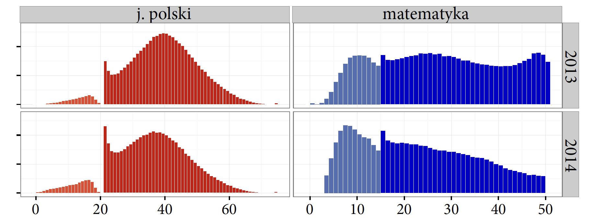

1 Fabryka smaku
W tym rozdziale porozmawiamy o standardach wykorzystywanych przy tworzeniu wykresów statystycznych. Dlaczego standardy są tak ważne? Wyobraźmy sobie, że przygotowujemy serię raportów, w których znajdzie się kilkadziesiąt lub kilkaset wykresów. Jeżeli każdy wykres będzie rządził się innymi prawami, to czytelnik za każdym razem będzie musiał zgadywać, jak dany wykres czytać. Znacznie szybciej pojawi się zmęczenie wywołane koniecznością odcyfrowywania zapisu dla i tak bardzo złożonych zależności. Zwiększy się ryzyko złego odczytania danych i czas potrzebny na zrozumienie całości. Profesjonaliści nie mogą sobie na takie błędy pozwolić.
Podczas pracy w OECD obserwowałem, jak nad raportem z badania PISA pracuje liczny, kilkunastoosobowy zespół analityków. Wyniki prac tego zespołu trafiły do tysięcy odbiorców, począwszy od specjalistów od badań edukacyjnych, przez dziennikarzy, po rodziców zainteresowanych zróżnicowaniem umiejętności nastolatków w ponad 65 krajach uczestniczących w badaniach PISA. Na bazie tych wyników podejmowane są często istotne decyzje dotyczące systemu edukacji. Aby te wyniki były czytelne dla szerokiego grona odbiorców, niezbędna jest standaryzacja wykresów.
1.1 Do czego nam są potrzebne wykresy?
Wykresy tworzymy po to, aby pokazywać historie obecne w danych. Historie mogą być proste (np. w roku 2014 urodziło się więcej dzieci niż w roku 2013) lub złożone (liczba urodzonych dzieci jest związana ze strukturą demograficzną, jeden z czynników to boom demograficzny w okresie reprodukcyjnym wyżu demograficznego, do tego dochodzi ujemne saldo migracyjne). Im bardziej złożona historia, tym więcej wysiłku trzeba włożyć, by ją czytelnie przedstawić.
Do wyrażenia prostej historii nie potrzeba wykresu, w przypadku złożonej – już tak. Zilustrujmy to na przykładzie danych z Narodowego Spisu Powszechnego z roku 2011.
Źródło: Gazeta Wyborcza.
Porównajmy trzy sposoby przedstawienia historii o liczebności i strukturze populacji w Polsce: rysunek na marginesie, tabelę poniżej i opis słowny poniżej tabeli.
W wyniku przeprowadzenia Narodowego Spisu Powszechnego w roku 2011 ustalono, że w Polsce mieszka 38 511 800 osób, z czego 51,6% to mężczyźni, a 48,4% to kobiety.
Cała historia to stwierdzenie, że w populacji jest więcej kobiet niż mężczyzn. Czy potrzebujemy wykresu, aby pokazać trzy liczby? Czy wykres ułatwia ich zrozumienie lub wnosi dodatkową informację? Po dwakroć nie. Tabela ma wyraźną i łatwą do odczytania strukturę. Jedno zdanie słownego opisu komunikuje całą istotną informację. A wykres? Lubimy obrazki, ale jeżeli chodzi o przedstawianie informacji, to ten wykres niczego nie wnosi.
Inaczej wygląda sytuacja, gdy mamy do przekazania złożony komunikat oparty na dużym zbiorze danych. Zobaczmy historię wyników polskich matur z lat 2013-2014. Porównajmy trzy sposoby prezentowania tej historii: opis tekstowy, poniżej tabela i rysunek.
Wyniki matury z języka polskiego mają rozkład zbliżony do normalnego. W poszczególnych latach średnie tego rozkładu nieznacznie się różnią. Rozkład ten jest zaburzony w okolicy 21-22 punktów, czyli w pobliżu wartości stanowiących granicę zaliczenia (30% możliwych do uzyskania punktów). Praktycznie nie ma uczniów, którzy uzyskaliby jeden punkt poniżej progu zaliczenia, jest za to bardzo dużo osób, które zdały egzamin, otrzymując punkt więcej. Sugeruje to, że dosyć często osoby oceniające maturę, widząc, że do zaliczenia brakuje jednego–dwóch punktów, brakujące punkty ,,znajdowały’’. W przypadku egzaminu z matematyki rozkłady są różne w różnych rocznikach i zdecydowanie nie przypominają rozkładu normalnego. W pobliżu progu zaliczenia również widzimy pewną nieregularność, największą w roku 2014. Jest ona jednak mniejsza niż w przypadku egzaminu z języka polskiego.

Druga historia jest oparta na ponad 220 liczbach zebranych w gigantycznej tabeli. W tej sytuacji precyzja i struktura przepełnionej liczbami tabeli niewiele wnosi. Liczb jest zbyt wiele, by móc łatwo zauważyć jakąś zależność, a i tak w tabeli ujęto zaledwie jedną dwunastą danych. Z kolei w opisie słownym mniej skupieni odbiorcy mogą się pogubić. Nie jest on też kompletny, a zapoznanie się z nim trwa kilka–kilkanaście sekund. W tej historii wykres przedstawia dane z praktycznie tą samą dokładnością co tabela, ale można go szybciej odczytać. Umiejętne zilustrowanie złożonej historii za pomocą wykresu pozwala na czytelniejsze i pełniejsze jej przekazanie.
Jak tworzyć takie wykresy zapadające w pamięć? Potrzebne są dwie rzeczy. Znajomość podstawowych reguł sporządzania wykresów i praktyka polegająca na tworzeniu kolejnych i kolejnych wykresów. Podstawowe reguły poznacie w kolejnych rozdziałach tej książki. W każdym rozdziale znajdują się zadania pozwalające na dodatkowe aktywne ćwiczenie omawianych koncepcji. Stosując się do tych reguł, będziecie w powtarzalny sposób tworzyć czytelne i ustandaryzowane wykresy. A standardy są bardzo ważne.
1.2 Notacja muzyczna
Notacja muzyczna – symboliczny język, za pomocą którego można zapisać niemal wszystkie cechy dźwięków muzycznych, rytmiki, melodii, harmonii, dynamiki oraz artykulacji.

Źródło: Wikipedia.
Świetnym przykładem standaryzacji zapisu stosowanego przez zawodowców jest notacja muzyczna i zapis nutowy. Rysunek na marginesie przedstawia zapis fragmentu preludium nr 7 Chopina. Zapis ten może odczytać każda osoba znająca zapis nutowy, którego podstawy poznajemy już w szkole podstawowej.
Dlaczego kompozytorzy trzymają się zapisu nutowego, zamiast samemu wymyślać własne sposoby zapisu muzyki? Dlaczego nie kolorują nut lub nie stosują ozdobników na pięciolinii, nie ma tam żadnych słoneczek, kotków ani innych umilaczy?
To nie jest kwestia kosztów druku. Cena kolorowego tuszu nie jest aż tak wysoka, by wymuszać czarno-biały zapis nutowy. Powodem jest oczywiście standaryzacja zapisu, który musi być jednoznacznie i szybko odczytywany zarówno przez kompozytora, jak i wykonawcę. Granie na instrumentach jest wystarczająco angażującym procesem, więc żaden muzyk nie chce być w jego trakcie rozpraszany dodatkowymi bodźcami typu kolorowe nuty, perspektywa czy ozdobniki pięciolinii.
1.3 Rysunek techniczny
Rysunek techniczny – konwencja graficznego przedstawiania maszyn, mechanizmów, urządzeń, konstrukcji, układów, systemów itp., dostarczająca pełnej informacji o działaniu, wykonaniu elementów oraz montażu przedstawianego obiektu.

Źródło: Wikipedia.
Czytelniku, czy zastanawiałeś się kiedyś, dlaczego konstruktorzy trzymają się sztywnych ram rysunku technicznego, zamiast kolorować i upiększać różne elementy projektu w celu urozmaicenia graficznego swoich dzieł? Brzmi jak herezja? Dlaczego jeden konstruktor nie chce się wyróżnić na tle innych przez stosowanie kolorowych trójwymiarowych strzałek?
Podobnie jak w przykładzie z notacją muzyczną, tak i tutaj odbiorcą jednego projektu może być duża grupa osób. W urzędzie gminy rysunek będzie podstawą wydania zgody na budowę, a ekipa budowalna będzie go oglądała po to, by tę budowę wykonać. W niczyim interesie są błędy w komunikacji. Źle zrozumiane oznaczenia mogłyby doprowadzić do powstania niefunkcjonalnych budynków, a w skrajnym przypadku do katastrofy budowanej.
Konstruktor musi jednocześnie myśleć o wielu aspektach związanych z funkcjonalnością, bezpieczeństwem i trwałością opracowanych konstrukcji. Ale nikt nie oczekuje od niego, że na swój unikalny sposób wymyśli, jak zapisać projekt budynku. Kreatywność dotyczy projektu, ale nie sposobu zapisu.
1.4 Diagramy UML
Unified Modeling Language (UML, zunifikowany język modelowania) – język półformalny wykorzystywany do modelowania różnego rodzaju systemów informatycznych.
Źródło: Wikipedia.
Podobnie jak w poprzednich przypadkach projektant systemów informatycznych musi tak opisać swój projekt, by został on wykonany zgodnie z jego intencją. Nie ma tutaj miejsca na dowolność i wieloznaczność.
Projekt informatyczny będzie wytwarzany przez liczną grupę programistów, a następnie weryfikowany przez liczbą grupę testerów. Wszyscy oni muszą umieć odczytać zamysł projektanta, by zbudować zaprojektowane oprogramowanie. W tym celu powstały specjalne języki (patrz przykład na marginesie dla języka Unified Modeling Language), pozwalające w wizualny i zrozumiały sposób zapisać najbardziej złożone systemy.
Inżynieria oprogramowania jest relatywnie młodą dyscypliną, więc wciąż bogata jest w historie źle zaprojektowanych i źle opisanych systemów, które później nie działały. Ale problemy z kosztownymi naprawami niedziałającego poprawnie oprogramowania spowodowały, że zestandaryzowano zarówno procesy, jak i sam język opisu systemów.
1.5 Schemat elektryczny
Rysunek techniczny elektryczny – graficzny dokument konstrukcyjny, na którym za pomocą symboli graficznych przedstawia się części składowe obiektu elektrycznego oraz połączenia między nimi.
Źródło: Wikipedia.
Można mnożyć przykłady branż, w których standaryzacja była niezbędna do tego, by umożliwić efektywną i bezbłędną komunikację twórców z odbiorcami. Rysunek na marginesie przedstawia schemat elektryczny, na którym znajdują się ustandaryzowane symbole oznaczające cewki, oporniki, przełączniki i inne elementy. Każdy z tych symboli ma jednoznaczne, ściśle uregulowane znaczenie. Bez tej standaryzacji nie byłaby możliwa efektywna produkcja opracowanych rozwiązań oparta na bezbłędnej komunikacji pomiędzy projektantami układów elektrycznych a wykonawcami i użytkownikami.
W każdym z powyższych przypadków standaryzacja umożliwiła szerszy odbiór opracowanego rozwiązania. Ułatwiła bezbłędny odczyt. Te rysunki tworzone są przez profesjonalistów dla profesjonalistów. Kompozytor opisuje melodie dla muzyka. Konstruktor opisuje budynek dla kierownika budowy. Projektant systemu opisuje projekt dla programistów itp.
1.6 Co się dzieje, gdy nie ma standardów?
Tworzenie wykresów jest wciąż dosyć młodą dziedziną i dotąd rzadko było nauczane na szeroką skalę. W podstawówce uczymy się nut, w liceum uczymy się schematów elektrycznych, ale wciąż niewiele jest miejsc, gdzie można nauczyć się tworzenia wykresów. Być może to się zmieni i zajęcia z Data Literacy pojawią się w szkole podstawowej, ale jak do tej pory jedynie bardzo wąska grupa uczelni przygotowywała do tego. Nadal większość twórców wykresów jest samoukami, co niestety nie sprzyja spójności w prezentacji danych.

A brak standaryzacji może prowadzić do bałaganu. Jako przykład można wskazać raport Głównego Urzędu Statystycznego dotyczący spisu powszechnego z roku 2011. Raport jest dosyć krótki, ale znajduje się w nim wiele danych zaprezentowanych w sposób graficzny, często z użyciem wykresów słupkowych (Główny Urząd Statystyczny 2012). Pomimo iż użyty jest ten sam typ wykresu, to na różnych stronach są one pokazywane na bardzo różne sposoby. Rysunek powyżej przedstawia 15 różnych przykładów z tego raportu (a to jeszcze nie wszystkie). Wykresy te różnią się praktycznie każdym elementem. Raz dane przedstawiane są poziomo, raz pionowo. Raz stosowana jest perspektywa 3D a raz nie. Czasem słupki są cieniowane, czasem nie. Czasem są czerwono-niebieskie, czasem mają różne odcienie granatu, a czasem są pomarańczowo-żółto-zielone. Trudno uwierzyć, że pochodzą z jednej publikacji.
1.7 Standardy komunikacji wykresów na przykładzie Głównego Urzędu Statystycznego
W poprzedniej sekcji przedstawiliśmy raport GUS pełen niespójnych wykresów. Wiele się jednak zmieniło od 2011 roku w sposobie raportowania danych w tej instytucji. Wykresy są bardziej spójne graficznie. GUS prowadzi też szereg inicjatyw mających na celu spopularyzowanie wnioskowania statystycznego.
Przykładem takiej działalności jest zbiór standardów dotyczących raportowania statystyk na mapach (Główny Urząd Statystyczny 2017). Opracowany podręcznik przedstawia bardzo wiele aspektów komunikacji statystycznej i pełen jest konkretnych i bardzo praktycznych porad, co robić, a czego nie robić w komunikacji danych.
Z tego opracowania pochodzi Rysunek 1.8, wyjaśniający, jakie odwzorowanie wykorzystać do prezentacji danych na mapie Europy, a z jakich nie korzystać. Raporty opracowane zgodnie z tymi standardami będą bardziej jednolite i łatwiej będzie porównywać wyniki pomiędzy raportami z różnych lat i różnego autorstwa.
Opracowanie GUS omawia nie tylko kartogramy, ale też znajduje się w nim wiele użytecznych i praktycznych porad dotyczących tworzenia wykresów. Na Rysunku 1.9 przedstawione są rekomendacje dotyczące używanych kształtów. Odradza się korzystanie z cieniowania, perspektywy, zbędnych gradientów czy innych wizualnych efektów.
Wspomniane standardy zawierają również zbiór ciekawych rozwiązań wizualnych do prezentowania danych. Przykładem jest kartogram z Rysunku 1.10, gdzie kolory kodują dwie zmienne – odsetek osób z wykształceniem wyższym oraz wyprodukowane PKB na osobę. Użycie odpowiednich skal kolorystycznych pozwala na taką znaczną kompresję danych prezentowanych na wykresie.
1.8 Standardy komunikacji wykresów na przykładzie gazety ,,The Economist’’
Nie tylko raporty urzędów statystycznych są bogate w wykresy. Coraz częściej zaawansowane wizualizacje danych goszczą na łamach gazet i portali informacyjnych. ,,The Economist’‘, ,,The Guardian’‘, ,,The New York Times’’ to jedne z pierwszych dużych gazet, które poważnie potraktowały temat prezentacji danych w sposób wizualny. Z szacunku do czytelnika największe i najlepsze gazety wypracowały jednolite, czytelne i charakterystyczne standardy prezentacji danych, a niektóre z nich nawet udostępniły te standardy publicznie. Przykładem gazety, która zdecydowała się na taki krok, jest ,,The Economist’’.
W zestawie standardów ,,The Economist’’ (McLean 2017) znajdują się bardzo precyzyjne informacje, jak duże powinny być poszczególne elementy graficzne zarówno w wydaniu na komputery stacjonarne, jak i na telefony komórkowe. Na jednej stronie tej gazety często znaleźć można kilka wykresów, nic dziwnego, że muszą one być ze sobą maksymalnie spójne.

Komunikacja wizualna prowadzona przez ,,The Economist’’ jest bardzo spójna. W standardach opisane jest pięć typów wykresów: dwa słupkowe, z czego jeden ze słupkami nałożonymi na siebie, a drugi z słupkami obok siebie, jeden wykres kropkowy, jeden wykres liniowy i jeden wykres temperaturowy. Dla każdego z tych wykresów przedstawione są bardzo szczegółowe reguły, jakie kolory, jakie kroje pisma, grubości linii, jakie wielkości elementów stosować, by uzyskać spójny efekt.
1.9 Standardy komunikacji biznesowej na przykładzie IBCS
Standardy zaprezentowane w poprzednich dwóch podrozdziałach zostały opracowane na własne potrzeby poszczególnych instytucji. Zarówno GUS, jak i ,,The Economist’’ przygotowały zbiór standardów, by ich raporty, gazety, strony były bardziej spójne wizualnie. Ale dostępne są też standardy opracowywane dla zewnętrznych organizacji, mające uczynić ich komunikację bardziej spójną. Przykładem są Międzynarodowe Standardy Komunikacji Biznesowej (ang. The International Business Communication Standards) (2022). Ten zbiór reguł powstał w wyniku współpracy Rolfa Hicherta i Jürgena Faissta i jest obecnie rozwijany w bardzo transparentny sposób przez stowarzyszenie IBCS-A. Większość materiałów można przeczytać bezpłatnie na stronie tego stowarzyszenia.

Na rysunku Figure 1.12 przedstawiliśmy sześć wybranych rekomendacji obecnych w standardach IBCS. Odpowiadają one bardzo operacyjnym wskazówkom: Nie używaj nieregularnych symboli do przedstawiania danych. Oprzyj się na sprawdzonych kształtach. Upewnij się, że wartości na osiach przedstawiają przedziały o równej długości. Zaczynaj słupki od zera na wykresach słupkowych. Zamiast wykresów kołowych stosuj bardziej czytelne wykresy słupkowe. Nie używaj perspektywy, cieni i efektów 3D – nigdy. Nie używaj kolorów, jeżeli nie niosą żadnej informacji.
Standardy składają się z wielu bardzo szczegółowych wskazówek i rekomendacji, które są pogrupowane w siedem reguł udanej komunikacji. Reguły te wraz z krótkim komentarzem przedstawione są w tabeli poniżej.
| Reguła | Komunikat |
|---|---|
| Say | Przekazuj konkretny, istotny komunikat. |
| Unify | Stosuj jednolite oznaczenia i wyróżnienia. |
| Condence | Zwiększaj ilość informacji, dbaj o treściwość. |
| Check | Zapewnij wizualną spójność wykresów i tabel. |
| Express | Wybierz odpowiednią formę (opis, tabelę, wykres) dla prezentowanych danych. |
| Simplify | Unikaj bałaganu i zbędnych ozdobników. |
| Structure | Zadbaj o czytelną strukturę. |
1.10 Zadania
Znajdź artykuł, książkę lub portal informacyjny, w którym przekazywane są informacje oparte na danych. Możesz np. skorzystać z portalu BiQdata.pl, BeautifulNews lub The New York Times. Na tej podstawie wykonaj poniższe zadania.
- Zastanów się, jak złożona jest przekazywana historia. Jak wyglądałaby w postaci tabeli lub opisu słownego? Jak długi byłby opis słowny, który przekazuje tę samą informację.
- Na przykładzie wybranego wykresu spójrz na reguły SUCCESS. Czy ten wykres jest zgodny z każdą z tych siedmiu reguł?
- W tym rozdziale omawialiśmy cztery dziedziny, w których ustandaryzowane symbole są wykorzystywane w komunikacji wizualnej. Znajdź jeszcze inną dziedzinę/obszar zastosowań, w których również stosuje się ustandaryzowane schematy komunikacji.
Jeżeli chciałbyś dowiedzieć się więcej o standardach IBCS i innych rozwiązaniach problemu uspójnienia wykresów, to mogą zainteresować Cię eseje Perełki z historii i Droga z książki Odkrywać! Ujawniać! Objaśniać! (Biecek 2016)